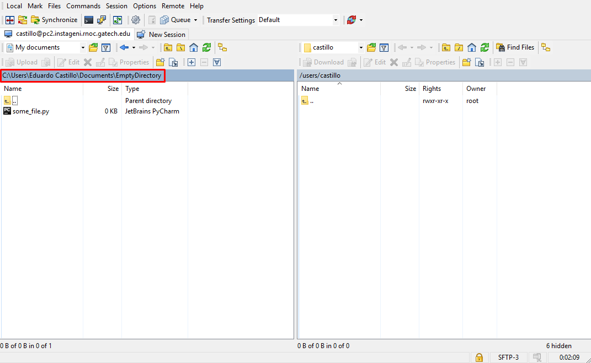

- WinSCP Installation & Usage Guide -
Installation
- WinSCP is a GUI (Graphical User Interface) tool which could be used to transfer files from a remote system to your ow system with a drag and drop interface. Instead of using SSH, SCP or other cumbersome commands to transfer specific files from a remote system WinSCP can be used for file transfer with ease.
- You may download WinSCP from the following link: here. For more detailed information on WinSCP, feel free to check out their website
- Once the file is downloaded, run the set-up and follow the displayed instructions to install it. After the installation, open WinSCP
Using WinSCP with your GENI nodes
- To use WinSCP with any given GENI node, follow these steps:
- Copy the host and the port number of the node in WinSCP, just like so:
- Type your GENI username in the "User name" input in WinSCP (Like I did in the previous screenshot)
- Now you will have to direct WinSCP to your SSH key, you may do so by clicking on the "Advanced..." button.
- Under the Menu that will be displayed on the Advanced settings window, select Authentication (It's under SSH). Then on "Private key file" select your SSH key and click on "OK"
- Now you may click on the login button on WinSCP, you will be asked for your key passphrase, write it down and proceed.
- If you have followed the steps correctly, you should see an interface alike this one

- On the left area you will see files that are stored in your computer in the selected directory, and on the right you will see the files stored on your GENI node, to transfer files just drag and drop from either side